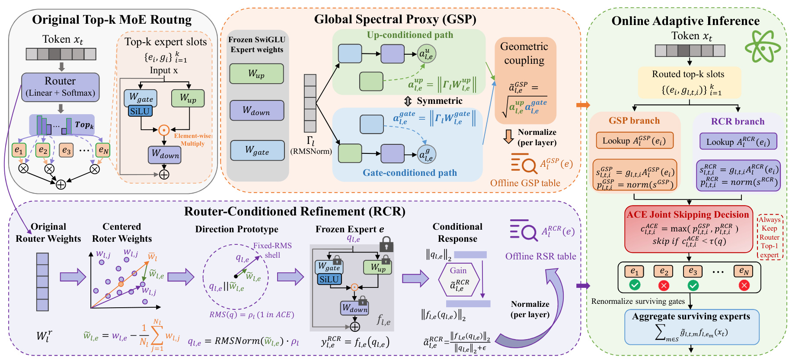
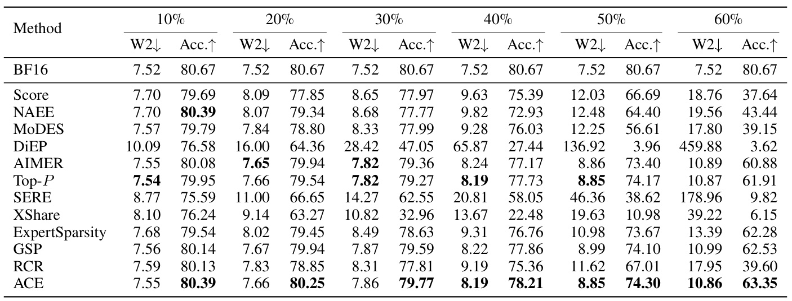
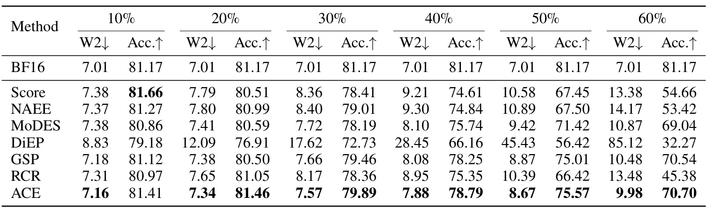
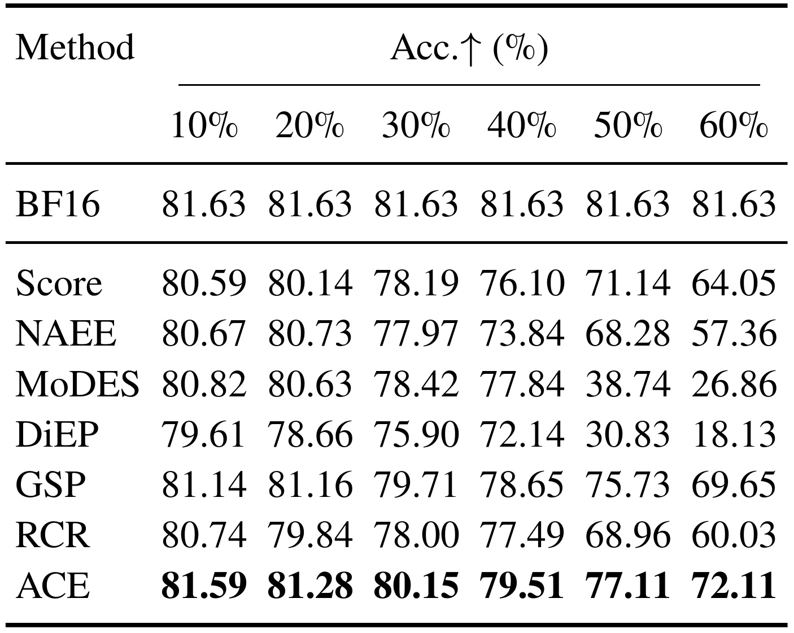
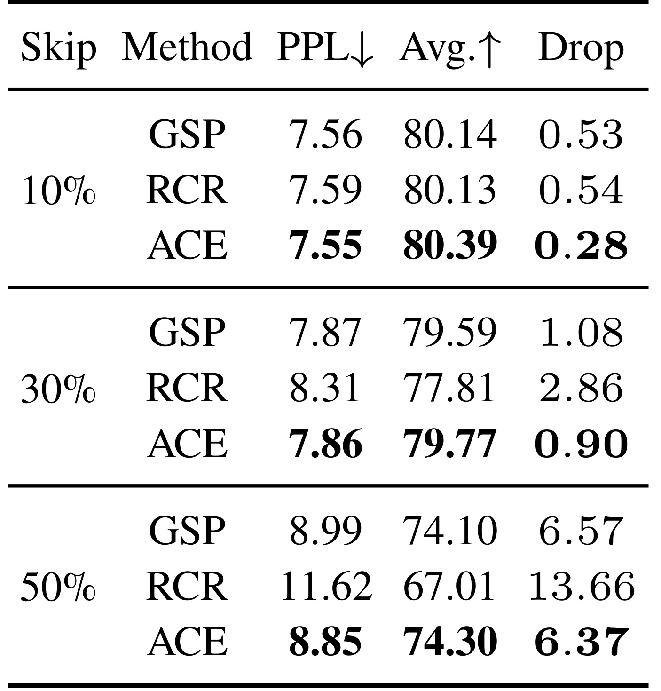
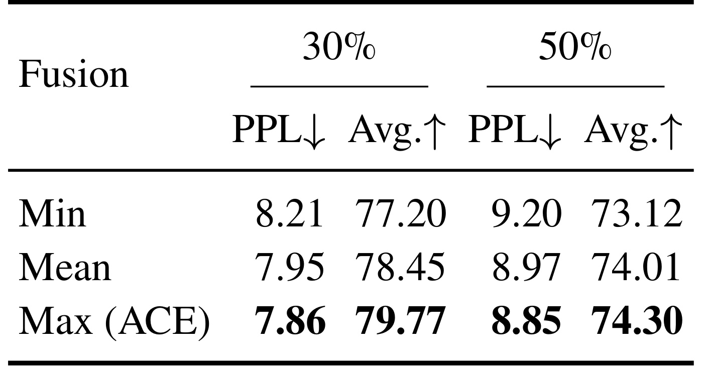
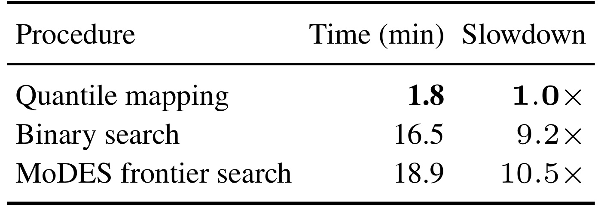
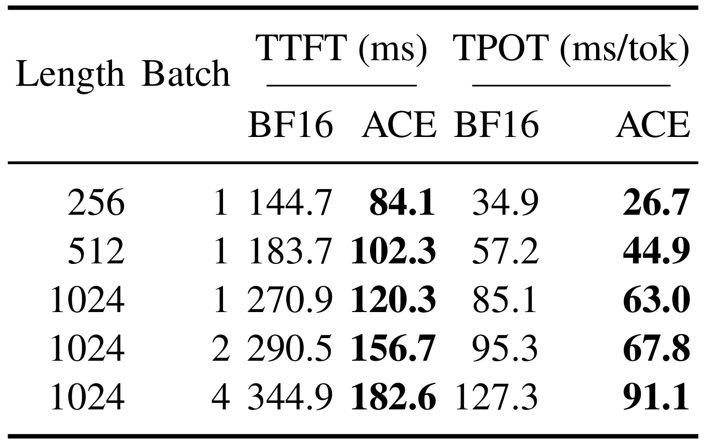
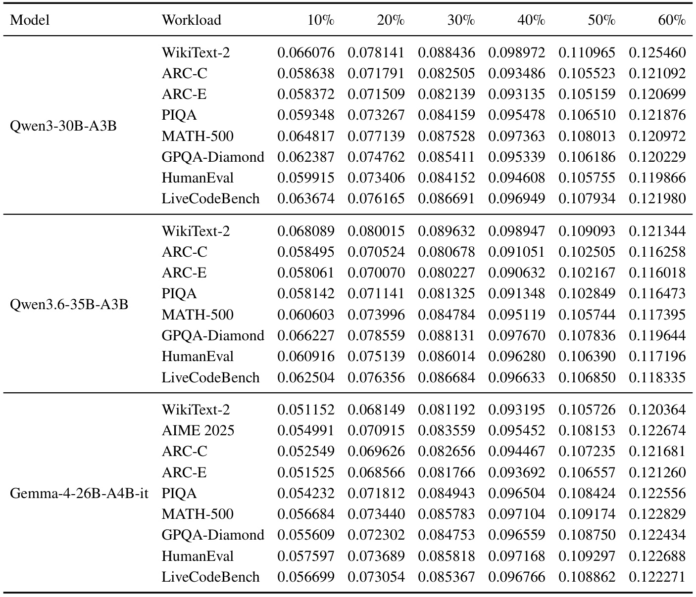

ACE：用专家结构与路由方向共同决定哪些计算可以跳过
- 论文：ACE: Adaptive Calibration-Free Expert Skipping for MoE-based LLMs
- 作者：Zukang Xu、Zhixiong Zhao、Xing Hu、Jiangyong Yu、Houji Wen、Jun Li、Zhe Jiang、Dawei Yang；前两位共同一作。
- 机构：PDF 未列作者机构，一作主机构未核验；通讯作者邮箱域名为 houmo.ai，不能据此推断全体作者归属。
- 发表时间：arXiv v1 于 2026-09-04 14:56 UTC 提交；精读与来源访问日期：2026-09-08（Asia/Shanghai）。
- 论文入口：arXiv:2609.05228
- 代码状态：已核验作者公开仓库，README 的阈值校准、RCR 系数和中心化默认值与论文描述存在差异，详见实验章。实验数值均为论文报告，本笔记没有独立复现实验。
1. 背景和问题
固定 top-k 路由让每个词元执行相同数量的专家槽位，即使各槽位的实际贡献不同，也会保留大量冗余计算；仅依赖路由置信度、校准数据或额外训练的跳过策略，又难以直接估计专家对输出的真实贡献。
这段问题表述来自摘要与引言。理解 ACE 之前，需要区分 MoE 已经实现的稀疏性和它想进一步消除的冗余。在传统稠密前馈层中，每个词元都会执行同一整块前馈网络；MoE 把这一模块替换为许多专家，由路由器从中选择固定数量的专家。总参数量因此可以远大于单次激活的参数量，但“每次只选择少量专家”并不意味着“每次所选的专家都必要”。当候选集合已经形成，里面仍可能同时出现主导输出的专家和几乎没有边际贡献的专家。ACE 针对的是这个更细的、随词元变化的执行单位。
论文把这样的单位称为专家槽位：同一个专家被两个不同词元选择，会形成两次独立的执行机会。跳过其中一次，不意味着把专家从模型里删除。这个区别决定了能兑现哪类收益。永久裁剪专家池可以减少权重驻留规模，却会让所有输入共享同一个裁剪后的结构；动态跳过则保留完整模型参数，只在某个输入到达某层时减少部分专家前向。后者有希望降低计算量或权重读取量，但不自动保证完整权重能装进更小显存，也不能简单把“跳过一半槽位”换算成“模型参数量减半”。
固定 top-k 在工程上的吸引力是执行图容易理解，候选数量也相对稳定；它的局限是预算和输入难度之间缺乏直接联系。一个常见词元可能让几个专家输出高度冗余，另一个承载数学推导或代码语义的词元却可能需要多种变换共同作用。如果所有词元都使用相同数量的专家，前者容易多算，后者又不能依靠简单全局降 k 来保持质量。因此，ACE 不更换原来的路由器，也不扩展原来的候选集合，而是在既有 top-k 集合内部作第二次筛选。其研究问题可以表述为：在真正执行专家之前，如何便宜地判断哪些已路由计算最不值得保留？
最直接的答案是看路由 gate，小权重对应的专家似乎更不重要。但 gate 描述的是路由器对不同专家的相对分配偏好，并不是专家前向输出的幅度。假设两个专家的 gate 相近，一个专家对当前输入有很强响应，另一个输出近乎为零，那么二者对混合输出的贡献就会差很多；反过来，一个 gate 稍小的专家也可能因为响应较大而不可忽略。真实贡献还涉及输出方向与其他专家的相互抵消，不能只由幅值完全决定。论文提出的代理试图改善前半个问题，并没有声称精确恢复删除某专家对最终答案的因果影响。
用一个只为解释机制的标量算例，可以更直观看到错判代价：两个专家的路由权重分别是零点八与零点二，输出分别是一与十，原混合输出就是二点八；若只因第二个权重较小而跳过它，重归一化后只剩第一个专家，输出变成一。这个差距来自低路由权重与高专家响应的乘积，不能由路由权重大小单独排除。若第二个专家输出方向相反，它还可能承担抵消另一个专家的作用；真实高维情况下，向量长度相同也可能产生完全不同的混合结果。因此，结构能力与方向响应是改善估计的线索，而非删除影响的完整答案。这个算例不是论文实验数字，也没有证明两张代理表能够恢复真实边际贡献。
第二个困难来自专家内部的非线性。SwiGLU 专家不是一个简单的线性矩阵，而是 gate 分支经过 SiLU 后与 up 分支逐元素相乘，最后再通过 down 投影。单独查看任意一个矩阵的大小，会忽略其余分支和输出映射的耦合；同时，前置 RMSNorm 的可学习缩放也会改变专家接收的有效输入。统计专家被选择的频率、计算一个权重范数、或者收集激活均值，都能提供某种信息，但它们并不等价。ACE 希望从冻结参数中提取更完整的结构信号，使低成本代理至少尊重专家由多条路径相乘构成这一事实。
第三个困难是方向依赖。即便某专家在全局结构意义上看起来较弱，它也可能专门处理路由器偏好的某个局部输入方向。只按全局变换能力评分，容易把这样的专门化专家误当成可删冗余。作者因此设计互补的两路证据：GSP 从三组投影与 RMSNorm 缩放估计全局能力，RCR 从路由权重构造方向原型，并离线测试专家对该方向的响应。后者不需要真实样本，但也只代表一个原型方向，并不覆盖该专家可能接收的整个条件分布。这是双视角互补的来源，也是它仍然属于近似方法的原因。
已有方法的差异需要放回这个任务边界中理解。静态裁剪、合并、专家内结构稀疏和批内共享各有不同目标；额外训练路由器或学习词元预算能够获得更灵活的决策，却需要额外训练或部署步骤。论文把多类方法放到同一 BF16、原始 top-k 候选、相同实现预算下比较，有利于观察选槽准则的影响。然而，若某种基线原本依赖批内协作、重路由或结构修改，这种统一协议可能只检验了其被适配后的某一侧面。因此，下文将“某模型某预算下的最好结果”与“普遍优于所有 MoE 压缩方法”严格区分。
最后，“免校准”必须放到论文实际流程中阅读。作者确实让 GSP 和 RCR 两张专家表只依赖冻结模型权重，也不更新原模型参数；但是，要把目标跳过率对应到具体阈值，实验仍会做一次无标签的完整模型前向来收集分数分布。估计器不学习数据与部署预算完全不读取数据，是不同层面的声明。公开代码进一步显示固定 WikiText 训练分割的校准入口。本文值得借鉴的是减少贡献估计对样本的依赖，而不是已经证明任意新工作负载都可以零数据、零准备成本地满足精确预算。只有先弄清这个边界，后面的精度与时延结果才不会被过度解释。
2. 方法
2.1 Global Spectral Proxy：把三条投影路径合成静态能力
ACE 的输入是一个已经训练好的 MoE 模型。第 l 层有 N 个专家，原始路由器对词元 t 选出 k 个专家，槽位 i 对应专家 e，路由权重记为 $g_{l,t,i}$。离线阶段输出两张按层与专家索引的标量表，在线阶段接收路由候选和 gate，输出保留槽位集合以及重归一化后的 gate。高维矩阵分析与原型前向放在离线；真正生成答案时，只对候选作查表、标量运算和比较。这使贡献估计可以放在昂贵专家前向之前。

图 2 左上保留了原始 top-k MoE 路由，说明 ACE 不需要重新学习候选生成。中央橙色区域把 gate、up、down 和 RMSNorm 参数组合成 GSP，两种对称路径先产生结构分数，再作层内归一化。下方紫色区域从原始路由权重得到中心化方向，固定其 RMS 尺度，送入对应冻结专家测量响应，然后得到另一张 RCR 表。右侧绿色区域才属于在线路径：当前词元 gate 与两张表分别相乘和归一化，使用最大值作保守跳过，始终保留原始 top-1，最后聚合剩余输出。读图时需要注意，上下两路都产生“专家级静态数值”，而不是为每个线上词元重新执行一次专家测量；否则就会把为省计算而做的估计变成重复计算。图中路由方向与两种路径是作者的机制示意，不是实测贡献热图；尤其 GSP 的示意公式应以正文式 4–6 的完整投影乘积为准，不能把图里简写的矩阵范数当成独立实现规范。
采用论文的行向量约定，设归一化输入方向为 $\bar{x}$，前置 RMSNorm 缩放对角矩阵为 $\Gamma_l$，实际输入为 $x=\bar{x}\Gamma_l$。为简化下式暂省略层与专家下标，并用 $G=\Gamma_lW^{gate}$、$U=\Gamma_lW^{up}$、$D=W^{down}$ 表示包含缩放的三条路径，专家前向为：
符号解释：这里 $W^{gate}$、$W^{up}$ 将隐藏维度映射到专家中间维度，$W^{down}$ 映射回隐藏维度，$\odot$ 是逐元素乘法。SiLU 定义为输入乘 sigmoid。利用其绝对值不超过输入绝对值，以及矩阵谱范数的次乘性，原文式 3 得到：
向量上的 $\|\cdot\|_2$ 为欧氏范数，矩阵上的同一符号为谱范数。这个上界说明三条路径以乘法共同控制潜在响应，但它不是 ACE 最终直接计算的分数。作者随后用 Frobenius 范数构造可计算的对称替代量：
$\|\cdot\|_F$ 是矩阵所有元素平方和再开方。第一条路径把 up 分支规模与 gate 到 down 的组合映射相乘，第二条交换两条输入分支的角色。几何平均让两路都强的专家得到更高分，降低某一条极大路径单独主导分数的程度。需要明确，从谱范数上界走到这种 Frobenius 耦合代理，是受到结构启发的设计，不能把代理数值说成对每个真实词元贡献的严格界。原文的理论解释建立了合理性，实验仍要承担验证排序是否有用的责任。 恢复下标后，先按层均值归一化，再用实时 gate 构造当前 top-k 内的相对分数：
$N_l$ 是该层专家总数，$\epsilon$ 防止除零。层内归一化去除不同层权重尺度差异，值超过一表示比本层平均更强；槽位归一化则把结构能力与当前路由偏好合成可比较的局部分布。两个归一化的对象不同：前者遍历整层专家，后者只遍历当前词元的 top-k。GSP 仍通过 gate 随输入变化，但它的专家能力因子固定，因此无法直接感知同一专家对不同输入方向的巨大响应差异。
2.2 Router-Conditioned Refinement：沿路由偏好方向测一次响应
RCR 的输入是冻结路由器的专家权重向量和冻结专家，输出是第二张标量表。设第 l 层专家 e 的路由向量为 $w_{l,e}$。如果向所有专家路由向量同时加上同一个向量，所有 logits 会多出相同的输入内积，softmax 概率保持不变。因而这部分共享平移不是可辨认的专家差异。原文先减去层均值，得到相对方向，再固定其 RMS：
$q_{l,e}$ 是方向原型，$d$ 为隐藏维度，$u$ 为坐标下标，$\rho_l$ 是原型输入尺度先验。统一设为一避免从真实激活估计尺度；RMS 归一化移除不同路由向量的长度差异，留下相对方向，避免重复编码已经由在线 gate 表达的置信度。论文并没有为每个真实词元生成自己的原型。一次固定方向的完整专家前向只在离线执行，这与线上计算真实激活再决定删不删有根本差别。
方向解释依赖一个近似条件。令隐藏输入分布为 $p_l(x)$，均值为 $\mu_l$、协方差为 $\Sigma_l$，并以高斯近似；用中心化路由向量进行指数倾斜，则有：
当 $\Sigma_l\approx\sigma_l^2I$ 时，均值偏移方向才近似与 $\widetilde w_{l,e}$ 对齐；$\sigma_l^2$ 是共同方差，$I$ 是单位矩阵。这个指数倾斜分布是解释方向原型的数学模型，不能自动等同于真实 top-k 选择后的条件分布。真实激活若明显各向异性，协方差会旋转或重新缩放方向；而无数据的原型没有估计这一协方差。RCR 的价值在于提供不同于全局范数的局部证据，其局限恰恰在于只用一个参数方向代表复杂条件输入。 原型进入对应专家后，计算输出与输入范数之比，再按整层平均响应归一化。在线步骤与 GSP 对称：
这组式子分别对应原文式 12–15，其中在线未归一化量就是 gate 与 RCR 表项的乘积。原型分母用于归一化输入规模，层均值用于比较同层专家，最后的 top-k 分母用于比较当前候选。由于原型响应是非线性 SwiGLU 的实际前向，它补充了 GSP 的线性组合范数，但不保证比 GSP 更稳定；后面的组件消融恰好显示，RCR 单独使用时会在激进跳过下显著退化。
2.3 双视角最大值、保留约束与输出扰动
原文式 16–19 采用不加额外融合系数的最大值规则。对每个槽位取两路相对分数的较大者，只有两路都低于阈值才允许跳过：
$\tau$ 是目标预算对应的阈值，$S^{ACE}$ 是初始跳过集合；为简洁，右式省略层与词元下标。取最大值意味着某一路强烈主张保留时，另一条弱信号不能把它平均稀释掉。随后强制移除跳过集合中的原始 router top-1；若剩下专家少于 $m_{min}$，就按贡献分数从高到低恢复槽位直到满足下限。$m_{min}$ 是每词元最少活动专家数，并不是被训练的新参数。正文引言使用“router-mass safeguard”的概括描述，明确可执行的 Algorithm 4 则列出 top-1 与最少活动数约束；不能额外补造一个未在算法中明确给出的概率质量阈值。
设最终保留集合为 $I$，跳过集合为 $S$，原始 top-k gate 非负且和为一，跳过概率质量为 $\alpha=\sum_{i\in S}g_i$。剩余 gate 重新归一化后得到：
$y$ 为原始混合输出，$\widehat y$ 为稀疏输出，$\mu_S$ 与 $\mu_I$ 分别是被跳过和保留专家的 gate 加权平均响应；$F_{max}$ 假定上界覆盖所有候选专家输出范数。当 $\alpha=0$ 时扰动为零；保留 top-1 保证不会删空，从而有 $\alpha<1$。扰动不仅取决于删掉的 gate 质量，还取决于两组响应的差别，这解释了为什么只看 gate 的风险。可是这个界依然不等于最终生成准确率保证，也没有把代理值严格连接到任务损失。在同一阈值下，交集删得更少，保守性成立；在匹配跳过率的比较中，各方法阈值会重新调整，所以必须用实验判断排序质量，不能直接援引集合包含关系证明 ACE 在同预算下必然更好。
3. 实验结果
3.1 评测协议与 Qwen 系列完整预算曲线
实验包含 Qwen3-30B-A3B-Instruct-2507、Qwen3.6-35B-A3B 和 Gemma-4-26B-A4B-it。WikiText-2 用 2048 序列长度计算 PPL；下游包含 ARC-C、ARC-E、PIQA、MATH-500、GPQA-Diamond、HumanEval 和 LiveCodeBench，报告七项准确率不加权平均。统一 BF16、Hugging Face 与 EvalScope 1.4.1、零样本提示、贪心解码以及 seed 42。ARC 和 PIQA 生成上限 1024，推理与代码任务上限 2048。所谓 10%–60% 是经过保护约束后实际未执行槽位占原始 top-k 槽位的比例。单次确定性运行没有给出重复实验方差，尤其 GPQA-Diamond 的亚百分点差异应谨慎。

表 1 的行是选槽方法，列把六个预算下的 PPL 与平均准确率并排。未跳过 BF16 为 7.52 和 80.67%，它在每组重复出现作为质量参照，不参加“跳过方法最好”的加粗排名。ACE 在 10% 时平均准确率 80.39%，与 NAEE 并列；到 40% 为 78.21%，相对 BF16 下降 2.46 个百分点；到 60% 为 63.35%，已经下降 17.32 个百分点。因此“激进预算下更优”意味着损失比竞争方法小，绝不意味着六成计算可无损删去。60% 时最强外部准确率基线 ExpertSparsity 为 62.28%，ACE 高 1.07 个百分点；PPL 为 10.86，也只是略优于 Top-P 的 10.87。表格还说明轻度预算下简单方法很有竞争力，GSP 与 ACE 的差距通常较小，因而额外方向证据的价值应结合预算、模型和部署成本衡量，不能只用冠军行掩盖绝对质量下降。

表 2 最醒目的结果是 50% 跳过时，ACE 的 PPL/准确率为 8.67/75.57%，MoDES 为 9.42/71.42%。按后者作分母，PPL 相对降低约 7.96%，准确率提高 4.15 个百分点；这是摘要所说的收益。该模型 BF16 准确率为 81.17%，所以 ACE 自身仍损失 5.60 个百分点，PPL 也从 7.01 上升。10% 时 Score 的 81.66% 反而高于 ACE 的 81.41%，说明不能笼统声称所有预算、所有指标都第一。20% 的 ACE 81.46% 高于未跳过参照，但一次运行下这可能是细小的评测波动或稀疏化改变生成路径，不能直接推断具有稳定正则化收益。随着预算进入 40%–60%，ACE 对 router-only 或 RCR 单独策略的优势更明显，支持多视角在重要槽位开始被删除时更有价值这一判断，同时也表明结论是在这个评测协议内成立。
3.2 Gemma 泛化与组件、融合消融

表 3 在第三个模型上检查趋势能否延续。ACE 六档准确率为 81.59、81.28、80.15、79.51、77.11、72.11%，均为该表跳过方法中最高；对应 BF16 是 81.63%。30% 时 ACE 比 GSP 高 0.44 个百分点，50% 高 1.38，60% 高 2.46，显示路由方向补偿在该模型上的边际价值随预算扩大。与之相比，MoDES 从 40% 的 77.84% 降到 50% 的 38.74%，反映不同决策准则可能出现很陡的退化区间。这些数字支持跨三个模型的方向性证据，但不能替代更广架构验证。表中没有 Gemma 的 PPL，作者解释原始模型异常高的困惑度与下游能力不吻合，因此采用下游准确率观察裁剪变化。这个缺失必须作为报告边界保留，而不是把省略的指标默认成“也更优”；三模型证据在指标覆盖上并非完全对称。

表 4 对 Qwen3-30B 选取 10%、30%、50% 三个预算，比较两个单独分支与联合方法。50% 时 GSP 的 PPL 为 8.99、准确率 74.10%，RCR 为 11.62、67.01%，ACE 为 8.85、74.30%。由此可见主要质量底座是 GSP，RCR 并非更强的独立重要性准则；它更适合在全局结构代理可能误删某些专家时提供保留证据。联合后相对 GSP 的准确率提升只有 0.20 个百分点，不能因为方法名字包含两路就宣称两者贡献相当。30% 时联合提升 0.18，10% 时提升 0.25，均没有多次运行方差支撑显著性判断。这里最可信的机制结论是：单个方向原型无法替代广泛结构信息，但与全局代理采用保守组合后，在报告的点位上不比单路差。想证明收益来自“纠正方向专门化误判”，还需要查看两路分歧槽位及真实输出响应的关联，目前表格本身只给结果层面的间接支持。

表 5 控制了采用相同两路证据这一前提，只改变融合方式。30% 时 Min/Mean/Max 的平均准确率分别为 77.20、78.45、79.77%，50% 时分别为 73.12、74.01、74.30%；对应 50% PPL 为 9.20、8.97、8.85。Min 让只要有一个视角低估就容易触发跳过，平均值会削弱另一条强保留信号，最大值则让两路一致认为可删后才删除，因此结果与作者的保守融合动机一致。需要注意，每种融合应在相同实际跳过率上比较，不能只固定同一个数值阈值，否则最大值删得少就天然占质量优势。论文的全局评测协议宣称预算匹配，但没有多次重复的误差条，也未给出两路分数高度相关时收益会如何变化。更重要的是，公开仓库默认给 RCR 乘以 0.1，这会改变两路实际竞争关系，复现这个消融前必须核清实验使用的是表中无缩放 Max 还是仓库默认加权 Max。
3.3 部署准备开销与端到端时延

表 6 比较的是在 Qwen3-30B 的 10% 跳过点构造阈值的准备时间。一次分位数映射用 1.8 分钟，二分搜索为 16.5 分钟，MoDES frontier search 为 18.9 分钟，对应约 9.2 倍和 10.5 倍的准备开销差距。这个收益来自一次收集的分数分布可以同时构造多个预算阈值，减少反复运行模型搜索；它不是每个词元的推理加速比，也没有表示 GSP 所需矩阵运算与 RCR 原型前向的全部离线成本已经消失。读者还应区分预算构造和模型贡献表预计算：前者需要无标签工作负载，后者只用权重。表中只有一个模型和一个目标点，不能直接把 1.8 分钟当成任意模型、任意硬件的部署常数。对于经常改变预算或接入新模型的场景，准备步骤缩短可能很有价值；对长期固定配置的服务，真正主要的收益仍应由下面的请求时延与质量曲线共同决定。

表 7 给出 NVIDIA A100 上的时延，TTFT 是首词元等待时间，TPOT 是后续每词元时间；不同列的单位分别为毫秒和毫秒每词元。长度 1024、batch 1 时，TTFT 从 270.9 降为 120.3 毫秒，约 2.25 倍；TPOT 从 85.1 降为 63.0，约 1.35 倍。表中最大解码加速约 1.41 倍出现在 length 1024、batch 2 的 95.3 对 67.8，而不是把最大 TTFT 和最大 TPOT 当成同一配置的同时收益。作者报告匹配预算的方法共享 dispatch 路径，轻量评分使时延差异在 1% 内，因此 ACE 的竞争点主要是在相近专家执行成本下保留更多质量。整个表使用 60% 跳过，这恰好也是准确率退化较明显的区域；服务决策不能只引用 2.25 倍而隐藏质量损失。数据范围也只覆盖 256–1024 长度和 1–4 batch，没有展示多机专家并行、连续批处理、长上下文或线上尾延迟，因此对真实服务吞吐的推断仍需补测。
3.4 阈值迁移证据与公开实现差异
附录 B.1 将预算转换写成明确算法。设完整前向观察到的路由槽位总数为 $N_{all}$，扣除 top-1 与最少保留约束后可以跳过的槽位数为 $N_{cand}$，目标跳过率为 $q$，则希望删除的个数为：
其中 round 表示取整，clip 表示限制到可行区间。对可删槽位分数排序后，把阈值放在第 $m_q$ 与下一项之间；边界重复值则选择使实际数量最接近目标的相邻可表示阈值。这样“目标 50%”才变成可测量的操作点，保护约束也会进入预算统计。公式没有训练标签、损失或梯度，但确实用到了实际输入所产生的分数分布。

表 8 横向列出 10%–60% 预算，纵向按模型和工作负载展开。Qwen3-30B 在 50% 时，WikiText-2 阈值约 0.110965，ARC-C 为 0.105523，HumanEval 为 0.105755；这些数落在相近区间，表明同一模型的分数尺度没有因任务切换而发生数量级变化。可是“阈值接近”并不等于把一个数据集阈值搬到另一个数据集后，实际预算和质量一定保持不变：需要直接报告交叉应用阈值的跳过率误差与准确率，才能完整证明这一点。10% 点的相对差异往往比激进预算更明显，边界处少量分数变化也可能改变可删槽位数量。Gemma 区块还列出 AIME 2025，但主文七任务平均中没有这一项，说明它在此作为额外阈值工作负载，不能悄悄加入准确率均值。该表支持的是部署尺度稳定性与阈值复用的可能性，并不消除预算控制阶段使用无标签数据这一事实。
截至访问日，作者官方仓库 README 的校准入口使用 WikiText 训练分割最前面的连续 $128\times2048=262144$ 个 tokens；融合规则把归一化 RCR 乘以 0.1，而 GSP 系数为 1；路由权重中心化默认关闭，只作为显式可选变体启用。与论文对照：主文式 9 和 Algorithm 3 明确减路由均值，式 16 不含分支缩放，评测协议又按每个方法与 benchmark 收集一次无标签完整模型分数。因此“估计器数据无关”可以成立，但“当前公开默认配置精确等同于论文所有定义和表格”尚不能确认。这可能来自版本演进或发布默认设置，但现有证据不足以确定原因。复现应保存代码版本、三个设置及预算来源，先对照原文配置，再单独报告默认配置；不能默默采用仓库默认值后把不同结果归因于硬件。
附录 Tables 9–26 给出三个模型从 10% 到 60% 的逐任务明细，主表已经完整覆盖其预算和平均结果，因此此处保留总表而不重复十八张截图。逐任务证据的用途是识别平均值隐藏的能力变化：数学、代码和常识任务可能以不同速度下降，PPL 与生成准确率也不总同步。论文只给单次确定性运行，尚缺按任务置信区间或预算下的失败样本分析；因而合理的复现目标不是仅对齐一个平均数，而是同时对齐任务提示、输出上限、实际槽位比例和每项结果。
4. 总结
ACE 最值得保留的思想，是把“路由器喜欢谁”和“专家可能输出多强”拆开估计，再用两个互补视角决定是否省去一次执行。GSP 尊重 SwiGLU 的乘法结构，RCR 用路由几何补充方向信息；最大值规则保留任一视角认为重要的槽位，使复杂高维信息能够在部署前压缩为两张标量表。与只降 k 相比，它为同一个计算预算提供了更细的词元自适应分配方式。论文在三模型、多预算下的报告支持这种思路，尤其在简单评分已经明显退化的区域，但收益需要同时读取绝对精度损失和实现边界。
仍然存在至少五个具体局限。第一，GSP 是结构启发的范数代理，输出幅度不是最终任务贡献，也没有捕捉专家之间方向抵消。第二，RCR 使用单个固定 RMS 原型，依赖近似高斯和协方差近似各向同性的解释，真实多峰条件输入可能不符合这些假设。第三，保守性证明针对相同阈值，匹配实际跳过预算后不能直接推出同样的质量序关系；实际优势仍依赖实证。第四，实验为单次确定性运行，若提升只有零点几个百分点，显著性与跨提示稳定性尚未建立。第五，公开 README 的中心化和分支系数与论文不一致，阈值构造仍需无标签输入，限制了“完全免校准”和“直接可复现”的强表述。
系统层面还有明确范围限制。动态跳过主要改变执行槽位数，完整专家参数仍被保留，不能把它当成等价的模型常驻内存压缩方案。A100 表格在少量 batch 和相对较短上下文上展示最高加速，未提供多机通信、动态批次、P99 或能耗数据。激进的 60% 点虽然时延收益大，却对应 Qwen3 从 80.67% 降至 63.35% 的平均准确率变化。若目标业务对代码或复杂推理错误敏感，合适预算很可能与普通文本吞吐场景不同，不能直接复用作者强调的最大加速点。
后续值得优先做三项核验。其一，固定同一个 checkpoint 与代码提交，显式比较论文的中心化、无缩放融合和 README 默认设置，记录每层实际跳过率与各任务结果，先消除实现歧义。其二，分析两路分数不一致的槽位，将其与真实专家输出范数、输出方向以及删除后误差对应，检验 RCR 是否确实保护了方向专门化专家。其三，把一个工作负载得到的阈值直接转移到不同领域和长上下文，测预算误差、质量变化和尾延迟，而不仅比较独立求出的阈值是否接近。如果这些核验成立，ACE 才更接近一个可预测的部署控制组件；当前它首先是一个有清晰结构动机、但复现配置需要进一步对齐的专家跳过研究。